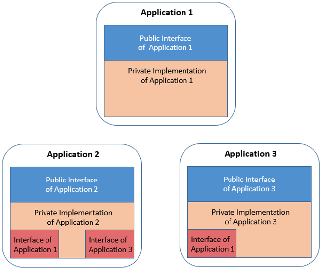

Defining dependency management
An IT system is developed by many teams and composed of different applications driven by the line of businesses and consumers. Applications need to interact to provide the overall system and interact through defined interfaces. Using well-defined interfaces allows the parts of the application to be worked on independently without necessarily requiring a change in other parts of the system. This application separation is visible and clear in a modern source code management (SCM) system, allowing clear identification of each of the distributed applications. However, in most traditional library managers, the applications all share a set of common libraries, so it is much more difficult to create the isolation.
This page discusses ways to componentize mainframe applications so they can be separated and the boundaries made more easily visible.
Layout of dependencies of a mainframe application
From a runtime perspective in z/OS, programs run either independently (batch programs) or online in a middleware (CICS, IMS) runtime environment. Programs can use messaging resources like MQ queues or data persistence in the form of database tables, or files. Programs can also call other programs. In z/OS, called programs can either be statically bound or use dynamic linking. If a COBOL program is the first program in a run unit, that COBOL program is the main program. Otherwise, the COBOL program and all other COBOL programs in the run unit are subprograms1. The runtime environment involves various layers, including dependencies expressed between programs and resources or programs and subprograms.
There are multiple types of relationships to consider. The source files in the SCM produce the binaries that run on z/OS. To create the binaries, a set of source level dependencies must be understood. There is also a set of dependencies used during run time. These multiple levels of dependencies are defined in different ways, and in some cases not clearly defined at all. Understanding and finding the dependencies in source files is the first challenge.
Building a program involves different steps:
- Compilation including any pre-compilation steps, defined as explicit steps or as option of the compiler, creates a non-executable binary (object deck) file.
- Link-edit, which assembles the object deck of the program with other objects and runtime libraries as appropriate. Link-edit can be driven by instructions (a link card) from the SCM or as dynamically defined in the build process.
These steps are summarized in the following diagram.
As part of the traditional build process, some additional steps, such as binds to databases, are sometimes included. The function of these steps is to prepare the runtime for a given execution environment. These should not be included in the build process itself, but should instead be included in the deployment process.
Source dependencies during the build differ from runtime dependencies
Most of the time when people think about an application, it is from a runtime point of view. Several components are required for an application to run. Some of these are required as dependencies, such as the database or middleware and its configuration, while others are required as related, such as other applications that might be called.
Everything running in a runtime environment starts as source from an SCM - or at least, this should be the goal when you consider infrastructure as code. Some source files represent definitions or are scripts that are not required to be built. Those that do require being built generally require other source files such as copybooks, but might not require the CICS definition, for example. Some of the source files are also included in many different programs - for example, a copybook can be used by many programs to represent the shared data structure. It is important to understand the relationships and dependencies between the source files, and when those relationships or dependencies have importance. The copybook is required to build the program, so it is required at compile time, but it is not used during run time. The configuration for a program such as the CICS transaction definition or the database schema is related to the application, but is required only for the runtime environment.
A concrete dependency is the interface description when calling a program. A copybook defines the data structure to pass parameters to a program. So, the copybook is important to be shared while the program is part of the implementation.
Programs call each other either dynamically or statically
On z/OS, there are two ways programs are generally called: dynamically and statically. Statically called programs are linked together at build time. These dependencies must be tracked as part of the build process to ensure they are correctly assembled. For dynamic calls, the two programs are totally separate. The programs are built and link-edited separately. At runtime, the subprogram is called based on the library concatenation.
Many organizations have been moving to increased usage of dynamic calls as that approach reduces the complexity at build time. However, this approach means that the runtime dependencies need to be tracked and understood if any changes are made that require updates in both program and subprogram.
These programs and subprograms are interdependent even when using dynamic calls. When a program calls another program, generally they share data. A transfer of control occurs between the program and the subprogram with the main program passing a set of data to the subprogram and generally expecting some data in response.
Different mechanisms exist to share pieces of data based on the language or the runtime. However, there is a need for the caller and the called program to define the data structure to be shared. The call of a subprogram is based on a list of transfer parameters, represented in the interface description like an application programming interface (API), but it is more tightly coupled than today’s APIs that are based on representational state transfer (REST).
Commonly, shared data structure is defined in an included source file - for example, COBOL uses copybooks.
It is very common to define multiple copybooks for programs in order to isolate data structures and reuse them in other areas of an application component. Using copybooks allows more modularity at source level and facilitates dealing with private and shared data structures, or even private or shared functions.
Applications and programs
In a web application, it is relatively easy to define an application because the physical artifact that is deployed is the complete representation of such an application: the EAR or WAR file. In the Windows world, it is more complicated since an application can be made of several executables and DLLs, but these are generally packaged together in an installable application or defined by a package manager.
An application is generally defined by the function or functions it provides. Sometimes there is a strong mapping between the physical parts that are shipped, and sometimes it is a set of parts that run the application.
In the mainframe, we fall closer to the second case where applications are defined by functions. However, based on the way the applications have grown over the years, there may be no clear boundary as to where one application ends and another one begins. An application can be defined physically by a set of resources (load modules, DBRMs, definitions) that belong together as they contribute to the same purpose: the calculation of health insurance policies, customer account management, and so on.
At the source file level, the relevant files contributing to an application are derived from the runtime of an application. These files can usually be identified by different means: a set of naming conventions, the ownership, information stored in the SCM, etc. It may not seem obvious at first glance, but most of the time it is possible to define which source files contribute to a given application.
Scoping your source files to an application has many benefits. It formalizes the boundaries of the application, and therefore its interfaces; it allows you to define clear ownership; and it helps with the inventory of the portfolio of an organization. Planning of future features to implement should be more accurate based on this scoping.
Applications and application groups
Within an organization, multiple applications generally make up the business function. An insurance company may have applications dedicated to health insurance, car insurance, personal health, or group health policies. These applications may be managed by different teams, but they must interact. Teams must define the interfaces or contracts between the applications. Today, many of these interactions are tightly coupled with only a shared interface defining the relationship.
As we have seen so far, for traditional z/OS applications, the interface is not separate but defined in source via a shared interface definition, generally a copybook or include. This source must be included in each program build for them to be able to interact. With this information, an application can be defined by two main components: shared interfaces that are used to communicate with other programs and the actual implementation of the programs.
It is important to note that shared copybooks could be shared not only within an application, but also across programs or across applications. The only way other programs or applications can interact with the program is by including the shared interface definition. A z/OS load module does not work like a Java Archive (JAR) file, because it is does not expose interface definitions.
The following diagram illustrates the concept of an application having a private implementation (its inner workings, represented in tan), and a public interface to interact with other programs and applications (represented in blue).
As applications communicate, their implementation consumes the public interface of the applications with which they interact. This concept of a public interface is common in Java programs and the way the communication between applications is defined. This principle can also be applied to existing COBOL and PL/I programs to help explain the structure required for a modern SCM, and is illustrated in the following diagram, with the applications’ usage of other applications’ interfaces indicated in red.

Cross-cutting interfaces
There are additional capabilities that might need to be shared in addition to sets of data structures for application communication. These capabilities might include standard security or logging functions and can be considered cross-cutting, infrastructure-level interfaces (represented in brown in the following diagram). These capabilities may be developed once and then included in many different programs. It would be very helpful if these additional included capabilities could also be handled as shared components with their own application lifecycle. The challenge comes when these components change in a non-compatible way. These types of changes are generally infrequent but might be needed at times.
In the preceding sections, we have laid out some of the key factors when considering the source code of traditional mainframe applications. The environment generally consists of many different applications that can provide shared interfaces and could consume shared components, or cross-cutting interfaces.
The knowledge of these factors and their respective lifecycles can guide the desired structure of source files in the SCM. Several patterns are possible to provide appropriate isolation, but to also provide appropriate sharing based on different requirements.
Resources
This page contains reformatted excerpts from Develop Mainframe Software with OpenSource Source code managers and IBM Dependency Based Build.